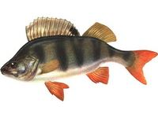

Окунь.


Одна з найпоширеніших і нарядних наших риб. Водиться в річках, річках, озерах, в більших ставках, усюди, де досить свіжа вода. Своїм виглядом і кольором помітно відрізняється від інших риб. Його коротке сплюснене з боків тіло злегка горбате, особливо у дорослих особин. Тулуб покритий дрібною, міцно сидячою в шкірі лускою без слизу. Великий рот озброєний безліччю дрібних і досить гострих зубів. У помаранчевих очах – невеликі, іскристі темно-фіолетові зіниці . Спинних плавців два. Задній – невеликий, м’який , жовто-зеленого кольору; передній – жорсткий, складається з довгих і гострих колючок, з’єднаних між собою блідо-сизою перетинкою з великою чорною плямою на кінці. Грудні плавці – блідо-помаранчеві або жовтуваті; черевний, анальний і хвостовий плавники – яскраво-червоного кольору. Спина – зазвичай темно-зелена, черево – жовтувато-біле. По зеленувато-жовтим бокам, від спини до черева, тягнуться 5-9 темних поперечних смуг, надаючи окуневі «тигрове» розфарбування, що приховує його в заростях водної рослинності від ворогів і допомагає непомітно підкрадатися до своєї жертви. Треба сказати, що колір окуня в сильному ступені залежить від середовища, в якій він переважно мешкає. Наприклад, в торф’яних кар’єрах і деяких лісових тінистих озерах живе суцільно темний окунь. Окуні, живуть в прозорій воді з піщаним або глинистим дном – світлого розфарбування, у них іноді навіть відсутня темна пляма на першому спинному плавці, а поперечні смуги на боках бувають ледь помітними. І ще одна особливість є в зовнішності цієї риби: зяброві кришки ззаду не закруглені, як у багатьох риб, а закінчуються одним, іноді двома гострими шипами, які дуже боляче колються, і можуть необережному рибалці заподіяти серйозну неприємність: після уколу цього шипа на тілі людини з’являється запалена пухлина. Правда, трапляється такий конфуз рідко і в основному з новачками. За розмірами окуня не можна віднести до категорії великих риб. У більшості наших водойм його звичайна довжина 15-20 см при вазі 80-150 г. У водосховищах окунь крупніше, там не рідкість окуні вагою 500-700 і більше г. Рекордсмени досягають довжини 40-50 см і ваги 1,5-2 кг. Науковці та практики схильні вважати, що у нас водяться дві породи окунів: окунь звичайний і карликовий, який до самої старості не набирає ваги більш 250 г. Саме карликовий окунь, частіше всього стає здобиччю рибалок-аматорів. У сезон відкритої води улюбленими місцями дрібних і середніх окунів є порослі осокою, очеретом та іншою рослинністю заплави, де вони влаштовують засідки на дрібну рибку. Великі воліють глибокі вири, ями і виходять звідти на жирування лише вранці та ввечері. За природою своєю окунь ненажерливий хижак, але в молодості в його раціоні головним чином личинки комах, черв’яки, дрібні рачки, ікра риб. Дорослі харчуються рибою переважно, хоча не дають спуску і іншої підводним тваринам: поїдають все, що рухається і їстівне – хробаків, раків, молюсків і т. д. Часто окуні полюють за здобиччю колективно: виявивши зграйку дрібних рибок, з величезним завзятістю переслідують її, відкривши роти і голосно плямкаючи в передчутті ласощів. Трапляється навіть так, що, захопившись переслідуванням, вискакують слідом за своєю здобиччю на берег. Статевозрілим окунь стає на третьому, а іноді й на другому році життя. Нерест у нього «гаремний» або по-науковому гніздовий: одну ікринку супроводжують 4-5 молочників. Відбувається він малопомітно при температурі води 7-8°С наприкінці квітня, початку травня (коли розпускається листя берези). Ікра, укладена в довгі клейкі стрічки, відкладається на дрібних місцях на підводну рослинність, корчі, коріння дерев, на стебла залитого чагарнику і т. п. Великі окуні ікру відкладають на глибині. Кидати ікру, окуні збираються невеликими зграйками і відшукують собі відповідну зону проживання. Помічено, що в непроточних або слабо проточних водоймах окуні стоять у глибоко зростаючих очеретах, осоці і лататті. У річках облюбовують зарослі, тримаються за камінням і корчами на слабкій течії. Місць з швидкою течією уникають. Ловля окуня триває круглий рік з невеликими перервами на повінь і нерест. Вудять тільки у світлий час доби, так як окунь виключно денна риба. Кращі години – ранок. У сезон відкритої води найбільш підходящої снастю є поплавкова вудка. Ловлять з берега, з дамб, пристаней, плотів, а також з човнів. Оптимальна кількість вудок – дві. Навесні і влітку в якості насадок використовують головним чином хробака, мотиля; восени – краща насадка мальок; взимку – мотиль і черв’як. Ловлять в основному з дна. Але іноді корисно і підняти насадку. Клює окунь енергійно – поплавок, як правило, відразу йде на дно, тому з підсіканням можна запізнюватися. На гачку він завзятий і сильний. Але витягувати окуня треба обережно, так як у нього слабкі губи. Чималий інтерес представляє ловля окуня на невеликі блешні спінінгом, а також подьоргуванням з насадкою малька. Краща пора для цих снастей – осінь, приблизно з кінця серпня, коли окуні починають збиратися у великі зграї. Добутливий лов окуня і взимку, особливо жадібно він клює в перші 15-20 днів після льодоставу і за 2-3 тижні до танення льоду.